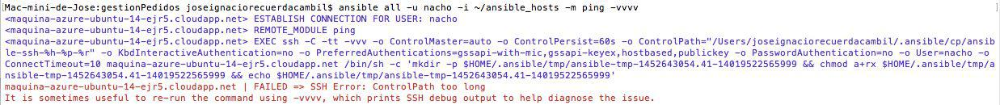

Errar es humano
Pero para liarla parda necesitas un ordenador
Bill Vaughan, traducción libre
Programa: hechizo lanzado sobre un ordenador que convierte lo que uno teclea en mensajes de error.
De "The jargon file"

Un error es
una situación anómala o excepcional que requiere tratamiento

Error: Segmentation fault
Tratamiento: core dumped

Se impone una depuración
#include "tontitest.h"
void ea(){
printf( "Aquí estamos porque hemos venío\n" );
}public class Main {
public static void main(String[] args) {
System.out.println("Here I am");
System.out.println("Hello World!");
}
}#!/usr/local/bin/node
var rest = require('restler');
var url = 'http://127.0.0.1:8080/contador/';
process.argv.forEach(function (val, index, array) {
console.log( "Argumento "+index+" valor "+val ); // Qué recibimos
if ( index > 1 ) {
rest.put( url + val ).on('complete', function( data ) {
console.log( data ); // Qué ha llegado
} );
}
});
La pila rebosa
Esto no funciona
Nuevo género:
Selfie con error
Hazlo a prueba de fallos
Si no lo has probado, está roto
var test = require('tap').test,
nodeo = require(__dirname + '/../../lib/nodeo.js');
var utils = nodeo.utils,
vector = nodeo.vector;
test('loads', function (t) {
t.ok(vector, 'Loaded OK');
t.ok( vector.version, 'Version ' + vector.version + ' OK' );
t.end();
});Prueba todos los niveles

Integra continuamente
sudo: required
dist: trusty
language: perl
perl:
- "5.16"
before_install:
- sudo apt-get update -qq
- sudo apt-get -y install libhunspell-1.3-0 libhunspell-dev
- >
echo "use Test::Text;just_check( 'text','/usr/share/hunspell');"
> just_check.t
install: cpanm ExtUtils::PkgConfig Test::Text TAP::Harness
script: >
perl -MTAP::Harness -e 'use utf8;
my $harness = TAP::Harness->new( {verbosity => 0} );
die "FAIL" if $harness->runtests( "just_check.t" )->failed;'Has sido tú
¿Dónde está el error?
Los computadores son gente honrada

Enróllate
Evita la
amimevaitis
Para evitar errores, aparte de los tests anteriores (que no sirven de nada si no son completos), evita el cargo cult
StackOverflow es tu amigo
Pero tú debes ser su amigo también
Issue en GitHub
Recuerda
✔ Prueba
✔ Examina
✔ Entiende
Y si todo falla
Créditos
- Paraguas por Pame Figueroa
- Spectrum por Rosa Meckman
- Error retry, fail por James LeVeque
- Guru Meditation de la Wikipedia, sacado del Amiga
- Core Dumped por Lance Fisher
- Monstruos verdes By Matthew Inman - CC BY 3.0, Wikipedia
- La imagen del debugger está sacada de este tutorial de Youtube
- Pila de Thomas Galvez
- USB de Etienne
- El bloque cuadrado en el agujero redondo de Yoel Ben Avraham
- Diablillo de Dirk Haun
- Justin y Colin por Alexa Clark
- Gatito tetera de Tomomi pero Original aquí
- Tren de H G
- Tío de SO de Eddie Welker
- Paraguas roto de Tyler Clemens